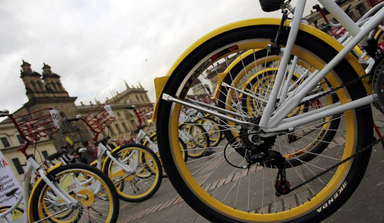
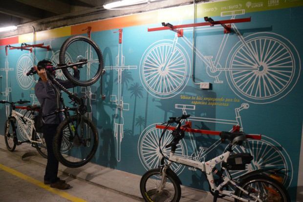

Galería
Aquí encontrarás algunas fotografías de las experiencias de nuestros bicusuarios con los parqueaderos avalados por BiciBlock
-

-

-
-
Aquí encontrarás algunas fotografías de las experiencias de nuestros bicusuarios con los parqueaderos avalados por BiciBlock
Aplicación pensada para los biciusuarios y su búsqueda de parqueaderos cerca de su ubicación, que sean confiables y seguros
Más videosEn nuestro diario vivir, observamos que los biciusuarios se las ingenian para que sus bicicletas queden al cuidado ya sea de un amigo, o dejarlas encadenadas a un poste, o incomodar a las demás personas en los transportes cuando no encuentra un lugar donde guardar su bici. Acá podemos encontrar una serie de videos que nos muestra la realidad que podemos cambiar con BiciBlock y hacer nuestra vida más fácil.
Más videosVer ahora
Ver ahora
Ver ahora